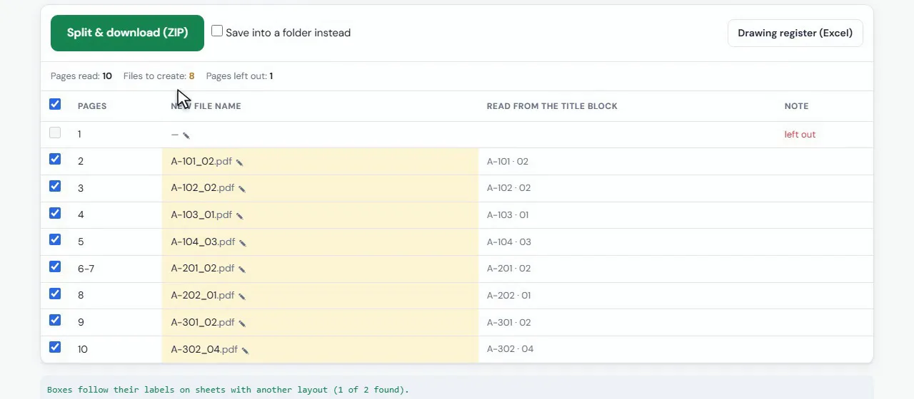

How to split a PDF drawing set into sheets named by drawing number
Turn one combined PDF of 50 or 500 drawings into one PDF per sheet, each file named with the drawing number and revision read from its own title block.
Your files stay on your computer. Nothing is uploaded.
Short answer
Open Split & Rename PDF, choose the combined PDF, drag a box around the drawing number on one sheet (and the revision if you want it in the name), check the list of names and click Split & download. You get a ZIP with one PDF per sheet, named like A-101_02.pdf.
Why splitting a drawing set by hand is a problem
Consultants and contractors often send a whole submission as one PDF. Before you can file it, link it to the drawing register or send single sheets to site, someone has to split it page by page and type every file name.
A normal PDF splitter only gives you page_1.pdf, page_2.pdf and so on. With 120 sheets that is an afternoon of opening each page, reading the title block and renaming the file, with a real chance of typing a number wrong.
Step by step
Choose the combined PDF
Open the tool and click Choose PDF, or drop the file on the page. The tool counts the pages and shows the first sheet.
Box the drawing number
On one sheet, drag a box around the drawing number in the title block. Add a second box around the revision, or the title, if you want them in the file name too.
Build the file name
Click the boxes and a separator to build the name, for example {1}_{2} gives A-101_02.pdf. Pages in a row with the same number can go into one file, and the cover or index can be left out.
Check every name
Every page is read and listed with its new file name and what was read from the title block. Click a name to fix it before you split.
Split and download
Click Split & download (ZIP), or Save into a folder instead. Tick Add a drawing register to get an Excel list of the sheets with the files.

What it handles
- Sheets with a different title block layout: the boxes follow their labels.
- Scanned sets: OCR reads the boxes when there is no text in the PDF.
- Sheets that run over two pages, kept together in one file.
- Two sheets with the same number, which get (2), (3) instead of overwriting each other.
After the split
The ZIP holds one PDF per sheet and, if you ticked it, a drawing register in Excel with the page, file name and what was read. File the sheets straight into your project folders, or send single drawings without sending the whole set.
Split your drawing set now
Free, runs in your browser, and your drawings never leave your computer.
Open Split & Rename PDF →Questions
How do I split a PDF into separate pages named by drawing number?
Open Split & Rename PDF, draw a box around the drawing number on one sheet and click Split & download. Every page is saved as its own PDF named with its number.
Can it read scanned drawings?
Yes. When a page has no text, OCR reads the boxes in English, Arabic or both.
Is the drawing set uploaded?
No. The PDF is read by your browser on your own computer and nothing is sent to a server.
What if a sheet has two pages?
Tick Pages in a row with the same name go in one file and they are saved together.
Can I also get a drawing register?
Yes. Tick Add a drawing register (Excel) with the files and an Excel list comes inside the ZIP.